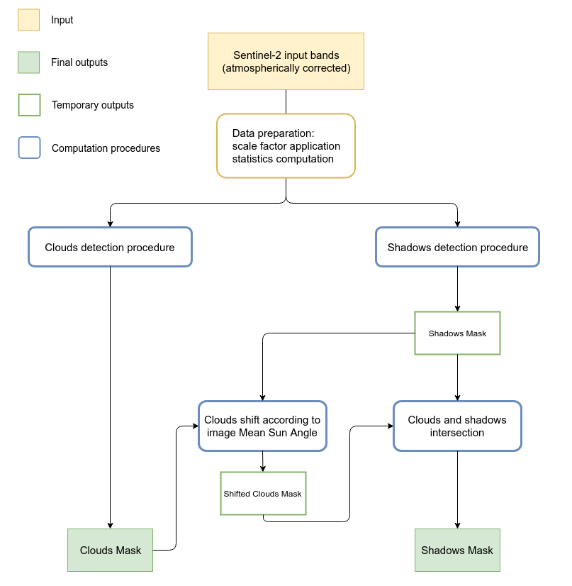
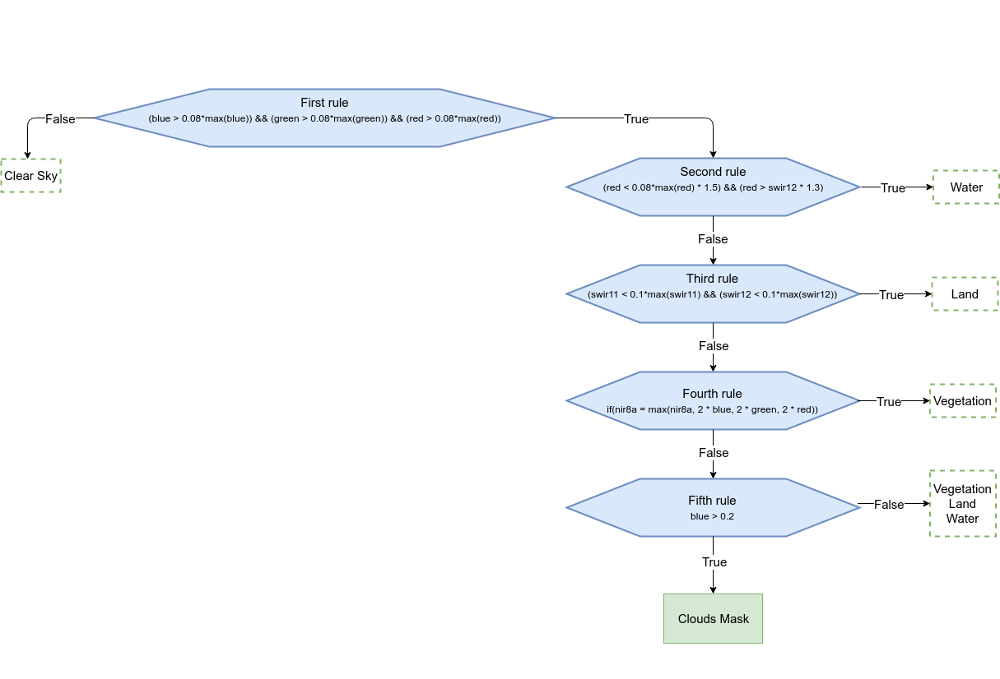
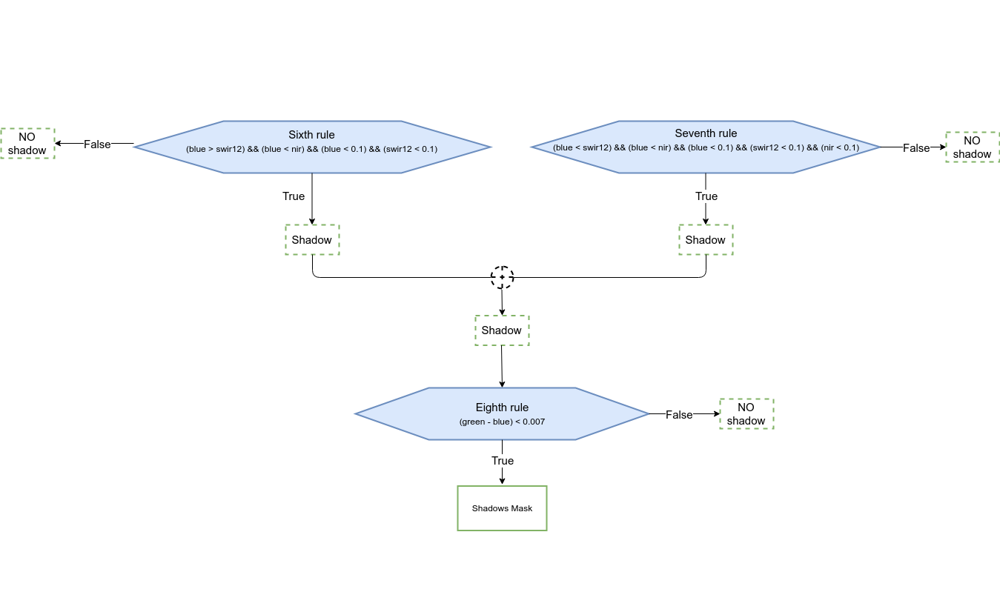

The implemented procedure consists essentially of values thresholds, comparisons and calculations between bands and they lead to two different rough maps of clouds and shadows which require further improvements and elaborations (e.g. transformation from raster to vector, cleaning geometries, removing small areas, checking topology, etc.) carried out in the different steps of the procedure.
|  Fig: Module General WorkFlow |
 Fig: Cloud detection procedure |
 Fig: Shadow detection procedure |
The algorithm has been developed starting from rules found in literature (Parmes et. al 2017) and conveniently refined.
Regarding the detection of shadows, some misclassification can occur. Often shadows and water have in fact similar reflectance
values which can lead to erroneous classification of water bodies as shadows. Therefore, in order to increase the accuracy of
the final shadow mask, a control check is implemented. Clouds and shadows are spatially intersected in order to remove misclassified areas.
This means that all those shadow geometries which do not intersect a cloud geometry are removed.
At the moment all input bands must be specified by users.
The final outputs are two different vector maps, one for clouds and one for shadows.
The metadata file (MTD_TL.xml) is required only if both masks (cloud and shadow)
are computed. The module retrieves from this file the sun azimuth and zenith necessary for the shadow mask cleaning phase
(see the schema above)
If flag -s is given all selected bands are rescaled using the specified scale factor [scale_fac=integer]. By default the scale factor is set to 10000,
the QUANTIFICATION_VALUE from the metadata of Sentinel 2 images.
The module takes the current region settings into accout. To ignore the current region and set it from the whole image, the flag -r has to be given.
The module allows to compute only the cloud mask or both cloud and shadow masks. If flag -c is given, only the cloud procedure will be performed. The computation
of cloud mask is mandatory for shadow mask creation. In fact cloud map is used during the cleaning phase of the shadow mask in order to remove misclassifications.
SEE ALSO
i.sentinel.download,
i.sentinel.download,
r.import,
r.external
AUTHOR
Roberta Fagandini, Moritz Lennert, Roberto Marzocchi
{kind=link}
{kind=link}
{kind=link}